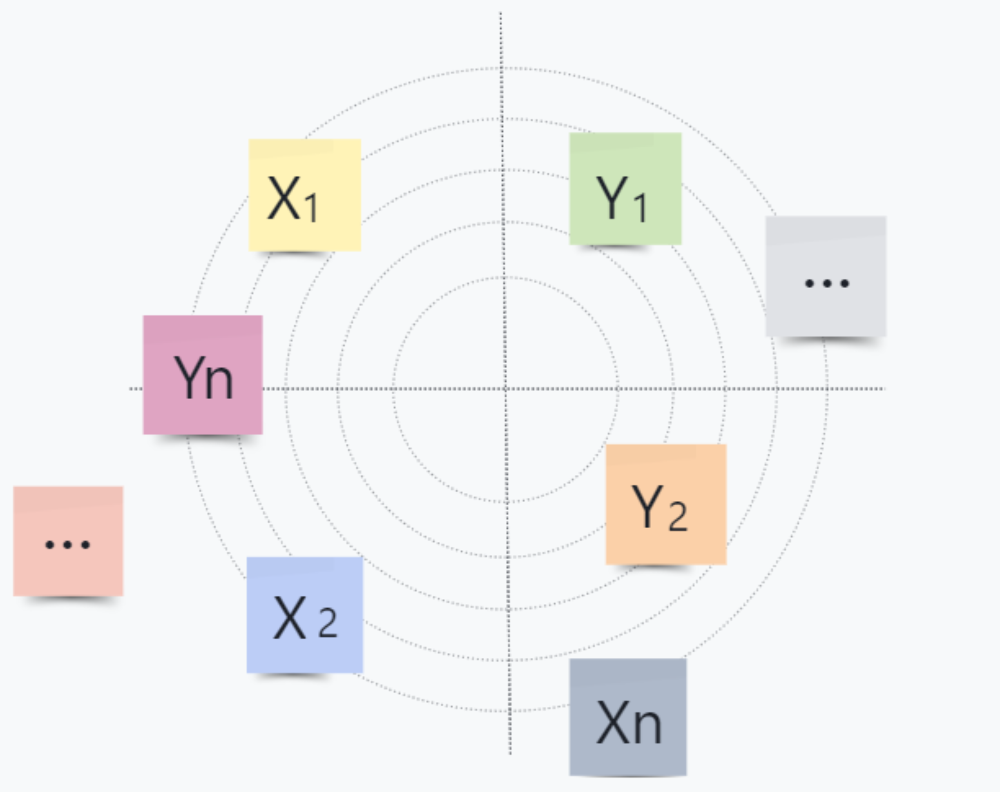

<!DOCTYPE html>
<html lang="en">
  <head>
    <meta charset="utf-8" />
    <meta name="viewport" content="width=device-width, initial-scale=1.0, maximum-scale=1.0, user-scalable=no" />

    <title>Randomized Respond</title>
    <link rel="shortcut icon" href="./favicon.ico" />
    <link rel="stylesheet" href="./dist/reset.css" />
    <link rel="stylesheet" href="./dist/reveal.css" />
    <link rel="stylesheet" href="./dist/theme/white.css" id="theme" />
    <link rel="stylesheet" href="./css/highlight/github.css" />


  </head>
  <body>
    <div class="reveal">
      <div class="slides"><section  data-markdown><script type="text/template">

## Randomized Response

> The first differentially private algorithm


<aside class="notes"><p>What I&#39;m showing is about the randomized response part in differential privacy，by Stanley L. Warner from nineteen sixty five</p>
</aside></script></section><section  data-markdown><script type="text/template">
Question Description：


Find out who cheated

<aside class="notes"><p>We work in a very simple setting. Suppose you are the[贼] instructor of a large class which has an important exam.  You suspect that many students in the class cheated.</p>
</aside></script></section><section ><section data-markdown><script type="text/template">
**Did you cheat on today's test?**


<aside class="notes"><p>Let&#39;s think about this situation, We ask students straightforwardly whether they have cheated</p>
</aside></script></section><section data-markdown><script type="text/template">
<!-- .slide: data-transition="fade" -->

Case 1

- Absolutely not !


<aside class="notes"><p>This student says he didn&#39;t cheat</p>
</aside></script></section><section data-markdown><script type="text/template">
<!-- .slide: data-transition="fade" -->

Case 2

- Sorry teacher, I did cheat.


<aside class="notes"><p>The student admits to his actions</p>
</aside></script></section><section data-markdown><script type="text/template">
<!-- .slide: data-transition="fade" -->

Case 3

- without saying any word.


<aside class="notes"><p>For various[ˈverēəs] reasons individuals in a sample[ˈsæmpəl] survey may prefer not to answer truthfully.</p>
</aside></script></section></section><section ><section data-markdown><script type="text/template">
Abstracting the problem



<aside class="notes"><p>Being a bit more precise: there are n people, and individual i has a sensitive bit X belong to 0 and 1.  Each person sends the analyst a message Y, which may depend on X or not.</p>
</aside></script></section><section data-markdown><script type="text/template">
Based on these $Y_{i}$ ’s, we would like to get an accurate estimate of 

$$
p=\frac{1}{n} \sum_{i=1}^{n} X_{i}
$$

<aside class="notes"><p>From this we can obtain a probability[ˌpräbəˈbilədē] estimate</p>
</aside></script></section></section><section ><section data-markdown><script type="text/template">
One which is perfectly accurate but not at all private：


<aside class="notes"><p>Let&#39;s start by assuming that everyone is telling the truth. individual i sends Y equal to the sensitive bit X.</p>
</aside></script></section><section data-markdown><script type="text/template">
<!-- .slide: data-transition="fade" -->

One which is perfectly private but not at all accurate：


<aside class="notes"><p>If each person is half likely to tell the truth and half likely to tell a lie. The data Y is completely independent of X.</p>
</aside></script></section><section data-markdown><script type="text/template">
<!-- .slide: data-transition="fade" --> 

One which we will call "randomized response"：


$$
\gamma \in \left [ 0, 1/2 \right ]
$$

<aside class="notes"><p>Let each person have more than half the probability of telling the truth and less than half the probability of telling a lie.</p>
</aside></script></section></section><section ><section data-markdown><script type="text/template">
<!-- .slide: data-transition="fade" -->

Observe that:


$$
\Downarrow
$$

$$
E\left[Y_{i}\right]=(1/2 +\gamma)X_{i}+(1/2-\gamma)(1-X_{i})
$$

$$
=2 \gamma X_{i}+1 / 2-\gamma
$$

<aside class="notes"><p>We can calculate the expected value of the received Y</p>
</aside></script></section><section data-markdown><script type="text/template">
<!-- .slide: data-transition="fade" -->

Thus:

$$
E\left[Y_{i}\right]=2 \gamma X_{i}+1 / 2-\gamma
$$

$$
\Downarrow
$$

$$
E\left[\frac{1}{2 \gamma}\left(Y_{i}-1 / 2+\gamma\right)\right]=X_{i}
$$

<aside class="notes"><p>Then the expectation of X is calculated by converting the[贼] above equation</p>
</aside></script></section><section data-markdown><script type="text/template">
<!-- .slide: data-transition="fade" -->

Then:

$$
\tilde{p}=\frac{1}{n} \sum_{i=1}^{n}\left[\frac{1}{2 \gamma}\left(Y_{i}-1 / 2+\gamma\right)\right]
$$

<aside class="notes"><p>Then adding up all of them (n in total) yields[yēld] this equation[ɪˈkweɪʒ(ə)n].</p>
</aside></script></section><section data-markdown><script type="text/template">
The above calculation gives that E[$\tilde{p}$] = $p$. 

$$
\operatorname{Var}[\tilde{p}]=\operatorname{Var}\left[\frac{1}{n} \sum_{i=1}^{n}\left[\frac{1}{2 \gamma}\left(Y_{i}-1 / 2+\gamma\right)\right]\right]
$$

<aside class="notes"><p>At this point, we can apply Chebyshev’s inequality to obtain.</p>
</aside></script></section><section data-markdown><script type="text/template">
Next, we analyze the variance of $\tilde{p}$:
$$
\operatorname{Var}[\tilde{p}]=\frac{1}{4 \gamma^{2} n^{2}} \sum_{i=1}^{n} \operatorname{Var}\left[Y_{i}\right] \leq \frac{1}{16 \gamma^{2} n}
$$
> The above formula is consistent with the Chebyshev’s inequality

<aside class="notes"><p>This can also be obtained with high probability via a Chernoff bound.</p>
</aside></script></section></section><section ><section data-markdown><script type="text/template">
Chernoff Bound has a total of three conditions:

- $X$ must be the sum of multiple random variables

- Each $X_{i}$ must be independent

- $X_{i}$ is a random variable taking values from [ 0 , 1] 

> This is not required, but [ 0 , 1] variables are easier to compute.

<aside class="notes"><p>So let&#39;s start by understanding the concept of Chernoff Bound</p>
</aside></script></section><section data-markdown><script type="text/template">
As $n \to \infty$, this error goes to 0.

$$
|\tilde{p}-p| \leq O\left(\frac{1}{\gamma \sqrt{n}}\right)
$$

>  The above formula is also consistent with the Chernoff Bound

<aside class="notes"><p>This is natural, the stronger the privacy guarantee we would like, the more data we require to achieve the same accuracy.</p>
</aside></script></section></section><section  data-markdown><script type="text/template">
<!-- .slide: data-background="./Pic/door.jpg" -->


<font color=White size=25>***by Sheldon***</font>

<aside class="notes"><p>This concludes my presentation. The next part will be explained by my team members.</p>
</aside></script></section></div>
    </div>

    <script src="./dist/reveal.js"></script>

    <script src="./plugin/markdown/markdown.js"></script>
    <script src="./plugin/highlight/highlight.js"></script>
    <script src="./plugin/zoom/zoom.js"></script>
    <script src="./plugin/notes/notes.js"></script>
    <script src="./plugin/math/math.js"></script>
    <script>
      function extend() {
        var target = {};
        for (var i = 0; i < arguments.length; i++) {
          var source = arguments[i];
          for (var key in source) {
            if (source.hasOwnProperty(key)) {
              target[key] = source[key];
            }
          }
        }
        return target;
      }

      // default options to init reveal.js
      var defaultOptions = {
        controls: true,
        progress: true,
        history: true,
        center: true,
        transition: 'default', // none/fade/slide/convex/concave/zoom
        plugins: [
          RevealMarkdown,
          RevealHighlight,
          RevealZoom,
          RevealNotes,
          RevealMath
        ]
      };

      // options from URL query string
      var queryOptions = Reveal().getQueryHash() || {};

      var options = extend(defaultOptions, {"transition":"slide"}, queryOptions);
    </script>


    <script>
      Reveal.initialize(options);
    </script>
  </body>
</html>
